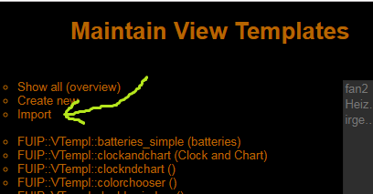
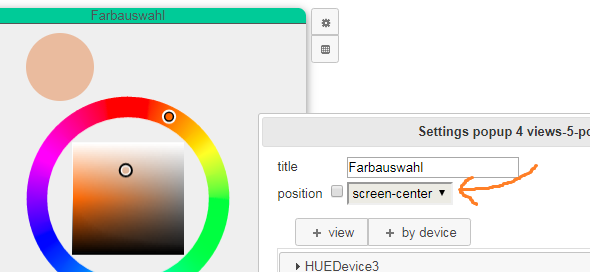
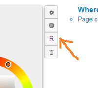
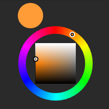

FUIP News
08.05.2009
Fix vom 04.05.2019 wieder ausgebaut (Probleme mit closeConn bzw. Apple)
Die Korrektur (aka "der Hack") wurde wieder ausgebaut, da das Problem inzwischen in FHEM (genauer: FHEMWEB) behoben wurde. D.h. es ist jetzt ein "update" notwendig, falls das Problem (wieder) auftritt.
05.05.2009
"Kaputte" WeekdayTimer in FHEM
Die Views WeekdayTimer, ShutterTimer und ShutterControl können mit WeekdayTimer-Devices angelegt werden, die in FHEM nicht existieren. Die Views funktionieren dann auch im Prinzip, aber beim Speichern der Schaltzeiten wurde bisher in FHEM ein WeekdayTimer-Device erzeugt, das sich auf das Gerät "undefined" bezieht. Dies wurde korrigiert, so dass jetzt gar kein WeekdayTimer-Device mehr automatisch angelegt wird. Statt dessen erfolgt eine Fehlermeldung und man muss das WeekdayTimer-Device manuell in FHEM anlegen.
04.05.2009
Happy Star Wars Day!
Leere Seite wenn closeConn gesetzt und auf Apple-Geräten
Unter den folgenden Voraussetzungen konnte FUIP gar nicht mehr verwendet werden. Es wurde immer nur eine Fehlerseite angezeigt, da keine Daten vom Server (d.h. von FUIP) gesendet wurden (ERR_EMPTY_RESPONSE oder ERR_CONNECTION_CLOSED).
- Im FHEMWEB-Device ist das Attribut closeConn gesetzt oder
- als Frontend wird irgendetwas von Apple verwendet.
Dieses Problem wurde behoben.
03.05.2019
WeekdayTimer: Tastatur abschalten für Zeitangaben
Beim View WeekdayTimer ist für Zeitangaben jetzt die Tastatur per Voreinstellung abgeschaltet. D.h. man kann die Zeiten nur noch über die Drop-Down-Listen ändern und auf Mobilgeräten wird keine Tastatur mehr angezeigt. Dieses Verhalten kann mit dem Parameter timeInput geändert werden. (Das ganze hat keinen Einfluss auf die Felder Horizon und Offset. Dort kann man wie bisher immer nur über die Tastatur etwas eingeben.)
View Templates importieren
Man kann exportierte View Templates jetzt auch importieren. Die Funktion is ein bisschen versteckt auf der Seite "Maintain View Templates". Der Name des neuen View Templates wird aus der importierten Datei genommen, falls noch kein View Template mit demselben Namen existiert. Ansonsten wird ein neuer Name automatisch erzeugt. Bei einem erfolgreichen Import wird man direkt auf die Bearbeitungsseite des neuen View Templates weitergeleitet.
Im Rahmen der dafür gemachten Änderungen wurden auch die anderen Import-Funktionen (für Popups, Zellen und Seiten) überarbeitet. Dies dürfte aber kaum Auswirkungen auf die Benutzung haben, außer vielleicht bei der Fehlerbehandlung.
Fehlerbehandlung beim Import mit fehlenden View Templates
Beim Import gab es bisher keine Fehlerbehandlung für fehlende View Templates. D.h. beim Import eines Objekts (Popup, Zelle oder Seite), welches ein View Template verwendet, dessen Definition im Zielsystem nicht existiert, kam es meistens zu einem kompletten FHEM-Absturz. Dies wurde behoben. Jetzt wird an Stelle des fehlenden View Templates ein spezieller View generiert, der eine Fehlermeldung anzeigt. Dieser View kann dann mit den normalen Bearbeitungsfunktionen durch etwas passendes ersetzt werden.
Das gleiche gilt auch für importierte View Templates.
Absturz im Konfigurationspopup bei fehlenden View Templates
Bei Verwendung eines nicht existerenden View Templates gab es einen FHEM-Absturz beim Schließen des Konfigurations-Popups (z.B. einer Zelle). Dieses Szenario war zwar bisher sehr unwahrscheinlich, der Fehler musste aber wegen der Fehlerbehandlung beim Import sowieso repariert werden.
Wetter-Views: Unnötige Meldungen in Developer-Konsole
Die Views WeatherDetail und WeatherOverview haben viele Meldungen in der Developer-Konsole (Javascript-Konsole) des Browsers erzeugt. Das ist für den Endbenutzer zwar meistens egal, hat aber bei der Fehlersuche gestört. Die Meldungen werden jetzt nicht mehr geschrieben.
30.04.2019
Attribut cellMargin für Zellzwischenräume
Mit dem Attribut cellMargin kann man jetzt den Platz zwischen den Zellen festlegen. Der Wert muss zwischen 0 und 10 liegen, der Standardwert ist 5. Um jede Zelle herum werden cellMargin Pixel frei gehalten. D.h. zwischen zwei Zellen ist zweimal so viel Platz (in Pixel) wie durch cellMargin festgelegt. Der Rand um den ganzen Anzeigebereich herum ist cellMargin Pixel breit.
Rand korrigiert bei layout=flex
Bei Verwendung des flex-Layouts war der Rand um den Anzeigebereich zu groß. Dies wurde korrigiert.
FHEMWEB-Overhead entfernt
Diese Änderung sollte (fast) keine sichtbaren Auswirkungen haben, außer ggf. etwas kürzeren Ladezeiten. Es wird jetzt kein FHEMWEB-Overhead (wie z.B. f18-Style Daten) mehr hinzugefügt und die HTTP-Header werden komplett von FUIP selbst kontrolliert.
29.04.2019
Wetter-Icons bei "Remote FHEM"
Bei den Views WeatherDetail und WeatherOverview wurden die Wetter-Icons nicht richtig angezeigt, wenn das Attribut fhemwebUrl verwendet wurde, aber dessen Inhalt am Ende keinen "/" hatte. Das sollte jetzt nicht mehr passieren.
28.04.2019
Batteries-View: Sortierung korrigiert
Auch bei Verwendung des Parameters labelRule wurde immer nach Alias und Gerätename sortiert. Dies wurde korrigiert, so dass jetzt immer nach dem tatsächlich angezeigten Namen sortiert wird.
25.04.2019
Batteries und PRESENCE-Geräte
Bei PRESENCE-Geräten ist das Reading batteryLevel ein Prozentsatz. Das wird jetzt vom Batteries-View richtig interpretiert. (Bei allen anderen bisher unterstützten Geräten ist batteryLevel eine Spannung, d.h. eine Angabe in Volt.)
Batteries: Flexibleres Label
Beim View "Batteries" kann man jetzt einstellen, wie das Label (also der dargestellte Name) zu jedem Gerät ermittelt wird. Dazu hat der View einen neuen Parameter labelRule. Man kann hier eine durch Komma getrennte Liste von Attributen, Internals und Readings der betreffenden Geräte eingeben. Das erste Attribut/Reading/Internal, welches beim jeweiligen Gerät existiert und auch einen Inhalt hat, wird dann als Label benutzt. Falls nichts gefunden wird, dann wird der Gerätename (also das Internal NAME) benutzt. Hier ein paar Beispiele. Angegeben ist jeweils der Inhalt des Felds labelRule und was es bewirkt.
- alias,NAME: Das ist die Voreinstellung. Damit ist alles so wie vorher: Falls ein Alias gesetzt ist, wird es benutzt, anonsten der Name.
- gassistantName,assistantName,alias,NAME: Damit wird zuerst nach einem gassistantName geschaut, dann nach einem assistantName. Ist beides nicht vorhanden, dann geht es weiter wie bei der Voreinstellung.
- NAME,alias: Damit wird immer der Gerätename (Internal NAME) benutzt, da dieser immer existiert. Dasselbe ist der Fall, wenn labelRule leer ist und meistens auch bei Tippfehlern.
24.04.2019
Toast-Messages abschaltbar
Die Meldungen, die z.B. bei Schaltvorgängen normalerweise links unten auftauchen, sind jetzt konfigurierbar. Dazu gibt es das neue Attribut toastMessages so lange man das Attribut nicht verwendet, bleibt alles wie vorher (auch selbstgebastelte Konfigurationen über HTML-Views müssten noch funktionieren). Das Attribut kann die folgenden Werte annehmen:
- all: Alles bleibt im Prinzip wie vorher, d.h. alle Meldungen werden angezeigt. Selbstgebastelte Toast-Konfigurationen funktionieren damit aber wahrscheinlich nicht.
- errors: Es werden nur noch Fehlermeldungen (also die roten Popups) angezeigt. Meldungen wie "set xy on" kommen nicht mehr.
- off: Es werden keine Meldungen mehr angezeigt, außer Fehlermeldungen, die von FUIP im Änderungsmodus (locked = 0) erzeugt werden. D.h. Lebenspartner oder andere Mitbewohner sehen wahrscheinlich tatsächlich gar keine Meldungen mehr.
Meldung beim Löschen verwendeter View-Templates
View-Templates, welche verwendet werden, können nicht gelöscht werden. Die dazugehörige Fehlermeldung gibt es schon eine Weile, sie wurde jetzt jedoch von "Toast" auf "Popup" umgestellt. Das bedeutet auch, dass sie vom Benutzer explizit quittiert werden muss.
20.04.2019
Batteries View auf Popups: Gerätenamen wieder lesbar
Beim View "Batteries" kam es bei der Ermittlung der Länge der Gerätenamen zu einem Fehler, wenn der View auf einem Popup verwendet wurde. Dadurch war der Gerätename extrem verkürzt, selbst wenn noch genug Platz zur Verfügung stand. Dies wurde korrigiert.
18.04.2019
Umbenennen von View Templates mit Verwendung auf Popups
Beim Umbenennen von View Templates wurden Views auf Dialogen ignoriert. Deshalb blieb bei View Template Instanzen auf Popups der alte Name stehen und es kam nach einem Neustart von FHEM oder einem "set load" zum Absturz wie am 14.04.2019 beschrieben. Dabei war es egal, ob das Popup Teil eines (anderen) View Templates war oder direkt durch einen View in einer Zelle ausgelöst wurde. Dieses Problem sollte jetzt nicht mehr auftreten.
Verwendungsnachweis auch für View Templates auf Dialogen
Im Verwendungsnachweis ("Where-used list") von View Templates wurden ebenfalls Views auf Dialogen ignoriert. Deshalb konnten auch View Templates gelöscht werden, wenn diese nur auf Popups verwendet wurden.
Verwendungsnachweis für View Templates "kompakter"
Bisher wurden Seiten (oder View Templates) mit mehrfachen Verwendungen eines View Templates in dessen "Where-used list" mehrfach angezeigt. Das ist jetzt nicht mehr der Fall.
Kein Absturz mehr bei fehlenden View Templates
Es erfolgt jetzt (hoffentlich) kein Absturz mehr, wenn ein View Template zwar verwendet wird, aber nicht (mehr) definiert ist. Statt dessen wird jetzt an Stelle der fehlerhaften View Template Instanz eine Fehlermeldung angezeigt.
14.04.2019
View Templates auf Popups in View Templates
Beim Aufruf einer FUIP-Seite, insbesondere der Übersicht der View Templates, konnte es zu einem FHEM-Absturz kommen, ggf. mit einem Eintrag im FHEM-Logfile wie etwa:
Can't call method "getStructure" on unblessed reference at ./FHEM/lib/FUIP/View/ViewTemplInstance.pm
Der Fehler war möglicherweise nicht klar reproduzierbar und erschien beinahe zufällig. Das Problem hing mit Popups in View Templates zusammen, welche wiederum selbst View Templates verwenden. (Also View Templates auf Popups in View Templates.) Dies wurde korrigiert.
Verbesserte Fehlerbehandlung bei fehlenden View Templates
Für die Analyse von Fehlern wie oben beschrieben wurde die Fehlerbehandlung an dieser Stelle verbessert. Jetzt wird bei fehlenden View Templates eine Meldung sowie ein Stacktrace ins FHEM-Log geschrieben. (...auch wenn das jetzt hoffentlich nicht mehr passiert.)
Export von View Templates
View Templates können jetzt in eine Datei exportiert werden. (Ähnlich wie Seiten und Zellen.) Allerdings gibt es bisher noch keine Import-Funktion.
Vereinheitlichung der "Neuer Name"-Dialoge
Die Dialoge (Popups) zum Eingeben neuer Namen von Seiten und View Templates wurden vereinheitlicht. Dadurch kann es zu kleinen Änderungen im Aussehen und im Ablauf beim Anlegen, Kopieren, Importieren und Umbenennen kommen.
12.04.2019
Batteries View: Geräte explizit herausnehmen
Der View Batteries bietet jetzt die Möglichkeit, unerwünschte Geräte explizit herauszunehmen. Dazu gibt es den neuen Parameter "exclude", der eine Komma-separierte Liste von Geräte-Namen (Device Keys) akzeptiert. Wie üblich gibt es auch eine Werthilfe.
10.04.2019
Popups nah am "Auslöser" positionieren
Bisher wurden Popups (Dialoge) immer zentriert auf dem Bildschirm ausgegeben. Das kann man jetzt über das Feld "position" im Konfigurations-Popup des Dialogs ändern. Bei Angabe von "starter-area" wird das Popup beim auslösenden Widget angezeigt. D.h. FUIP versucht, die linke obere Ecke des Popups in die Mitte des auslösenden Widgets zu legen. Falls rechts unterhalb des "Auslösers" nicht genug Platz ist, dann wird das Popup entsprechend oberhalb bzw. links vom Auslöser angezeigt.
Bisher konnte es außerdem vorkommen, dass bei "gescrolltem" Bildschirm nicht das komplette Bild beim Aktivieren des Popups grau überdeckt wurde. Man konnte dann auch das Popup nicht mehr durch Klicken auf den Bildschirm schließen. Dies wurde korrigiert.
03.04.2019
STATE View resizable
Der View STATE kann jetzt in der Größe angepasst werden ("sizing resizable" und "sizing auto"). Dabei passt FUIP sowohl die Schriftgröße als auch die Größe des Icons (falls angegeben) an.
Zusätzlich gibt es den neuen Parameter "lines", mit dem angegeben werden kann, wie viele Zeilen in den View passen sollen. Damit kann die Schriftgröße gesteuert werden: Je kleiner der Wert bei "lines", desto größer die Schrift.
Wenn eine der neuen Möglichkeiten verwendet wird, dann werden auch zu lange Texte im STATE abgeschnitten. Da dieses Verhalten nicht ganz kompatibel zum bisherigen ist, wird bei "sizing fixed" und "lines 3" die bisherige Logik verwendet.
01.04.2019
MenuItem, HomeButton resizable
Bei den Views MenuItem und HomeButton kann jetzt auch "sizing resizable" gewählt werden. Dies ist vor Allem dann sinnvoll, wenn die Basisbreite (Attribut baseWidth) relativ klein gesetzt wird. Es wird empfohlen, in diesem Fall nicht direkt MenuItem (bzw. HomeButton) zu verwenden, sondern ein entsprechendes View Template.
25.03.2019
WeekdayTimer: Wochentage wieder anklickbar
Bei mehreren Instanzen des WeekdayTimer auf einer Seite (dazu zählen auch solche in einem Popup sowie die Views ShutterControl und ShutterTimer) konnten die Wochentage nur auf einer Instanz ausgewählt werden. Beim Klick auf die Wochentage "kaputter" Instanzen hat zum Teil eine andere Instanz des WeekdayTimers reagiert. Das wurde behoben.
23.03.2019
WeekdayTimer: Position des "Timepicker"-Popups korrigiert
Beim WeekdayTimer View gab es einen Fehler bei der Positionierung des Popups zur Auswahl der Schaltzeiten. Die Position wird (vom jquery datetimepicker Plugin) bei kleinen Fensterbreiten nicht richtig berechnet, wenn horizontal gescrollt wird. Dadurch wurde das Popup auf kleinen Bildschirmen zum Teil nicht im sichtbaren Bereich angezeigt. Dies wurde korrigiert.
22.03.2019
Repariert: LabelHumidity und LabelTemperature mit Popup
Wenn fü ein LabelHumidity oder LabelTemperature ein Popup definiert wurde, dann ist der View selbst von der Anzeige verschwunden. Es war auch nicht möglich, das Popup aufzurufen. Genau genommen waren die Views noch vorhanden, deren Größe wurde aber vom System auf Null geändert. Dies wurde behoben.
Repariert: Verschwindende Texte auf Popups mit Style-Schema bright-mint
Das Style-Schema "bright-mint" hatte einen Fehler, durch den Texte auf Popups unsichtbar wurden. Bei der Bearbeitung des Popups (des Dialogs) waren die Texte sichtbar, aber nicht beim Aufrufen des Popups. Dies wurde repariert. Auch auf Popups haben Texte jetzt die Farbe "foreground".
Repariert: Einmal definierte Popups konnten nicht mehr gelöscht werden
Bei Views, für die man ein Popup definieren kann, war es nicht möglich, das Popup wieder zu löschen. Man konnte zwar die Checkbox zum "popup"-Eintrag auf dem Konfigurations-Popups abschalten, das hatte aber keinen Effekt und beim nächsten Öffnen des Konfigurations-Popups war die Markierung wieder gesetzt. Dies wurde behoben.
19.03.2019
Batteries-View: Geräte mit "ignore" werden ignoriert
Der Batteries-View zeigt keine Geräte mehr an, bei denen das Attribute "ignore" auf einen Wert ungleich 0 gesetzt ist.
18.03.2019
Validierung der Namen von Variablen und "flexiblen Feldern"
Ab jetzt ist es nicht mehr möglich (oder zumindest sehr schwierig), Variablen (in View Templates) und "Flexible Felder" (im HTML-View) mit "problematischen" Namen anzulegen. Es gelten dieselben Einschränkungen wie für Namen von View Templates (siehe den Eintrag vom 15.03.2019). Außerdem gibt es eine Reihe von reservierten Namen, die nicht verwendet werden dürfen. Dies sind...
- Für Variablen: class, defaulted, flexfields, height, id, sizing, templateid, title, variable, variables, views, width
- Für Flexible Felder: class, defaulted, flexfields, height, html, popup, sizing, title, variable, variables, views, width
Beim HTML View kann es jetzt außerdem zu Meldungen bezüglich Fehlern kommen, die vorher von FUIP ignoriert wurden. D.h. es waren auch bisher Fehler, aber jetzt wird es dem Benutzer explizit mitgeteilt.
Fehlermeldung und Log-Einträge bei Fehlern in der cfg-Datei
Die größte Teil der Konfiguration eines FUIP-Device wird nicht in der Datei fhem.cfg gespeichert, sondern in einer für jedes FUIP-Device eigenen Datei. (Diese Datei liegt normalerweise im Verzeichnis "/opt/fhem/FHEM/lib/FUIP/config" und heißt "FUIP_<name>.cfg", wobei <name> der Name des FUIP-Device ist.)
Diese Datei wird beim Start von FHEM geladen bzw. bei einem expliziten "set <name> load". Dabei kann es zu Fehlern kommen, insbesondere aufgrund von Fehlern in FUIP selbst oder auch durch die Verwendung von "problematischen" Namen. Bisher kam es bei solchen Fehlern zu Abstürzen oder es wurden die generierten Default-Seiten angezeigt. Insbesondere letzteres ist immer noch der Fall, aber jetzt wird in solchen Fällen wenn möglich eine Fehlermeldung angezeigt, sowie entsprechende Einträge im FHEM-Logfile erzeugt.
16.03.2019
Validierung der Namen von View Templates
Ab jetzt ist es nicht mehr möglich (oder zumindest sehr schwierig), View Templates mit "problematischen" Namen anzulegen. Im Eintrag von gestern steht, was jetzt noch erlaubt ist. Alte View Templates sollten weiterhin funktionieren (insoweit sie das mit einem "problematischen" Namen überhaupt getan haben). Es wird aber beim Anzeigen solcher View Templates eine Warnung angezeigt und es wird empfohlen, den Namen zu ändern.
15.03.2019
View Templates umbenennen
View Templates können jetzt umbenannt werden. Dabei werden auch alle Verwendungen in Zellen und anderen View Templates beachtet. Da es in JQuery-UI kein gutes "Umbenennen"-Icon gibt, hat die zugehörige Taste einfach ein "R" für "Rename".
Der Name eines View Templates nur aus normalen Buchstaben (a-z, A-Z), Ziffern (0-9) und dem Unterstrich (_) bestehen. Das erste Zeichen darf keine Ziffer sein. Bisher prüft FUIP den eingegebenen Namen noch nicht, was sich aber relativ sicher in Zukunft ändern wird.
13.03.2019
WeekdayTimer und ShutterControl: Dropdown-Listen korrigiert
Bei den Views WeekdayTimer und ShutterControl sind die Dropdown-Listen (Wertauswahl) häufig an ungeschickten Positionen erschienen oder waren teilweise verdeckt. Dadurch konnten die gewünschten Optionen nicht immer ausgewählt werden. Dies wurde korrigiert. Dadurch hat sich auch das Aussehen dieser Listen leicht geändert. Dies dürfte aber keinen Unterschied in der Funktionalität ergeben.
12.03.2019
LabelReading kann jetzt auch Timestamps anzeigen
Der LabelReading-View kann über den Parameter "content" dazu gebracht werden, den Timestamp des Readings anzuzeigen. Es ist möglich, den Wert, den Timestamp oder beides anzuzeigen. Der Timestamp wird im Format "12.03. 17:28" angezeigt.
ShutterControl jetzt auch mit "inverted_shutter"
Der ShutterControl-View hat jetzt einen Parameter "levelType". Man kann zwischen "shutter" und "inverted_shutter" auswählen. Die Funktion ist ansonsten so wie inverted_shutter beim WeekdayTimer-View.
Batteries auch mit Prozentwerten im Reading "battery"
Der Batteries-View versteht jetzt auch Prozentwerte im Reading "battery". Bisher wurde "battery" nur als Text ("ok" oder nicht "ok") ausgewertet.
11.03.2019
Thermostat mit minTemp, maxTemp und step
Beim Thermostat-View ist jetzt der Temperaturbereich (minTemp, maxTemp) sowie die Schrittweite (step) einstellbar. Bitte selbst darauf achten, dass die Werte einigermaßen sinnvoll sind. Als Dezimaltrennzeichen muss der Punkt und nicht das Komma verwendet werden.
10.03.2019
SpinDim mit einstellbarer Schrittweite
Beim View SpinDim kann jetzt über den Parameter "step" die Schrittweite eingestellt werden.
Colorwheel auf Popups und in View Templates
Da war noch einiges faul. Das sollte jetzt alles gehen. Außerdem waren noch ein paar Feinheiten beim Sizing noch nicht wirklich "fertig".
09.03.2019
Neuer View: Colorwheel
Es gibt jetzt den neuen View "Colorwheel". Man kann damit Geräte steuern, die Farben im RGB-Format akzeptieren bzw. bereitstellen, wie z.B. Hue-Leuchten. Der View entspricht ungefähr dem FTUI-Widget "colorwheel", wobei FUIP hier eine eigene Implementierung bereitstellt, die beim Sizing flexibler ist.
07.03.2019
Farbauswahl und Werthilfe für Icons repariert
Bei der Farbauswahl ("Colours" im Menü) und bei der Werthilfe für Icons kam es zu Fehlermeldungen wie "SecurityError" oder "cssRules cannot be accessed". (Möglicherweise tauchten die Meldungen an der Oberfläche nicht auf.) Die Farbauswahl bzw. die Icon-Liste wurde nicht richtig angezeigt bzw. hat "ewig" geladen. Das Problem sollte jetzt gelöst sein.
Das ganze ist im Zusammenhang mit externen CSS-Dateien aufgetaucht. Bisher konnte aber noch nicht ermittelt werden, wodurch diese externen CSS-Dateien eingebunden wurden.
WeekdayTimer kann jetzt "inverted_shutter"
Als "levelType" kam "inverted_shutter" hinzu. Dadurch wird die Reihenfolge der Prozentangaben umgedreht und "Auf" und "Zu" werden vertauscht. D.h. "Auf" entspricht minLevel (meistens 0) und "Zu" entspricht maxLevel (meistens 100). Das klingt im ersten Moment sehr ähnlich wie beim Vertauschen von minLevel und maxLevel, allerdings ist dann auch die Zuordnung der Prozentangaben zu den Werten in FHEM umgedreht.
| levelType | minLevel | maxLevel | Ergebnis (Anzeige in FUIP:Wert in FHEM) |
| shutter | 0 | 100 | Auf:100, 90%:90, 80%:80,... 20%:20, 10%:10, Zu:0 |
| shutter | 100 | 0 | Auf:0, 90%:10, 80%:20,... 20%:80, 10%:90, Zu:100 |
| inverted_shutter | 0 | 100 | Auf:0, 10%:10, 20%:20,... 80%:80, 90%:90, Zu:100 |
| inverted_shutter | 100 | 0 | Auf:100, 10%:90, 20%:80,... 80%:20, 90%:10, Zu:0 |
Sinnlose Fehlermeldungen entfernt
Bei manchen Aktionen wurde eine sinnlose Fehlermeldung angezeigt, wie z.B. bei "Make view template" oder auch manchmal beim Hinzufügen eines Views zu einer Zelle. Die Fehlermeldung erschien in einem Popup und zeigte meist nur eine Zahl an. Diese Fehlermeldungen sollten jetzt nicht mehr hochkommen.
06.03.2019
Neuer View: WeekdayTimer
Der neue View "FUIP::View::WeekdayTimer" ist eine Erweiterung des Views ShutterTimer und des im ShutterControl integrierten WeekdayTimer-Widgets. Anders als die beiden "alten" Views erzeugt WeekdayTimer allerdings nicht automatisch ein Popup, sondern wird ganz normal in die Zelle eingebunden. Falls man den WeekdayTimer auf einem Popup haben möchte, muss man explizit den View FUIP::View::Popup verwenden bzw. einen anderen Popup-fähigen View.
Es wird empfohlen, den View ShutterTimer nicht mehr zu verwenden, sondern nur noch WeekdayTimer. Vorsicht: Das Device beim WeekdayTimer muss in FHEM ein Device vom Typ WeekdayTimer sein, also nicht das zu steuernde Device wie beim ShutterControl.
Zusätzlich zum ShutterControl bzw. ShutterTimer bietet der WeekdayTimer die folgenden Möglichkeiten:
- "save config" kann automatisch ausgelöst werden. (Feld "saveconfig" im Konfigurations-Popup)
- Außer Prozentsätzen (für Rollläden) können auch Temperaturen oder zwei beliebige Werte (wie z.B. on/off) gesetzt werden. (Feld "levelType" im Konfigurations-Popup)
- "sizing" (auto/fixed/resizable) wird unterstützt
- Wenn der View WeekdayTimer auf einem Popup platziert wird, dann schließen die Tasten "Speichern" und "Abbrechen" das Popup.
FUIP News
...ab jetzt gibt es die Funktion "FUIP News". Sie ist erreichbar im Menu des Konfigurations-Popups unter "FUIP News".